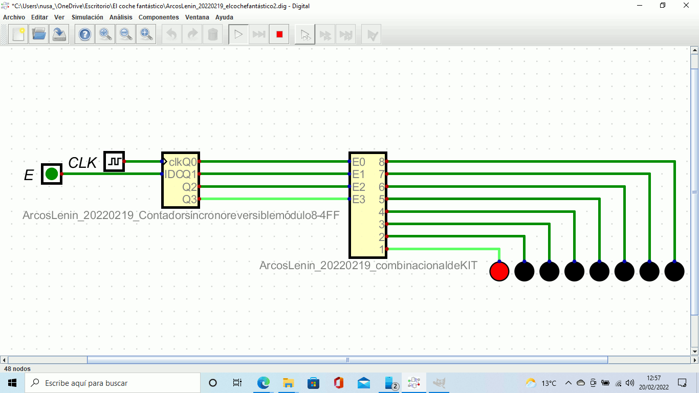

Para este nuevo trimestre dice que hay que leer y hacer unos cuestionario que a día de hoy no entiendo mucho por que los hizo de 2 horas si asi no hay quien estudie o se los memorice, es un método de estudio inútil de hacerlo. Abajo incluiré un gif ya que en esta evaluación no se hizo mucho que digamos.

KITT, el coche fantástico
Nos ha leido un poco de los temas sobre redes en clase, pero ha sido tan aburrido que la mayoría de la clase casi se ha dormido, incluido yo. Por lo general nos lo a explicado pensado que es de gran ayuda.
Con todo lo que nos ha explicado, no llego ha entender de como no puedo haber puesto mejor los cuestionarios para poder hacerlos ya que ha ido con la intención de poner lo más dificil posible para que nos jodamos entre todos.
Nos ha vuelto a leer otra vez lo de la clase anterior y nuevamente la clase estaba medio dormida por loi aburrido y poco llamativo que era a la hora de explicar, para mi que le falta dar una clase más dinámica y no tan monótona. Los temas que hay colgados los he ido mirando poco ya que no tiene sentido subir 300 pdf y que de ahí vayan a salir las preguntas como en el trimestre pasado, ya que más de la mitad no sirve para para nada. Aún no he hecho los test ya que no me parece divertivo ni productivo de perder más de 2 horas de mi vida esto, no me servirá para nada.
Aquí ya no sabría que poner en cuanto a lo que se hizo o he hecho, por lo que esto será muy inventado todo ahora, además de tantos correos que ha enviado con lo de reformas del semáforo que eso no se quien lo hará ya que la documentación para lo que pide no está muy explicado como el se piensa.
Con todo estos temas he visto hasta ahora y el más interesante es el de html ya que he visto un video de como hacerlo y me gusta como se hace pero no en si al encargo que se pide.
Regresando de pascua, en teoría debería de tenr ya hecho los cuestionarios pero sinceramente son infumable a la hora de hacer con solo ver que son más de 2 en eso, yo creo que a nadie le interesa hacer eso, no en sentido de enseñanza, si no ha la hora de querer completarlo por que es algo que con tantas preguntas y sin saber como utilizar eso en método de estudio no tiene ningín sentido en general.
En esta clase ya que es más fresca ha la hora de haberla hecho la semana pasado en respecto a la fecha de esto escrito, el MicrotiK no tiene ni pies ni cabeza a la hora de que sea entendible o intuitivo a la hora de configurarlo, comparado a la práctica que se hizo la semana pasada de TPIT, por lo que he de decir que las prácticas estas las hace los complicadas posibles sin tener conocimientos y haber enseñado previamente por lo menos de como hacer, pero como el sabrá hacer, se pensará de que uno nace sabiendo estas cosas o tiene tiempo que perder estas cosas.
He escrito en aules en la pizarra que no entiendo nuevamente lo que pide en la práctica tanto como en los pasos que son para mi parecer muy vagos a la de expresión, ni tanto yo, pero yo creo que he 10 minutos de lo que tardado en explicar como usar la terminal y como configurarla para continuamente crear las carpetas sea mejor explicado en ese sentido. Añado también que en el pedido de entrega se queda muy escaso y no muy claro a la hora de lo que quiere en los archivos que se suban a aules como final.